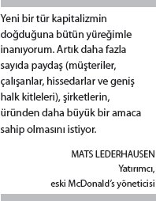
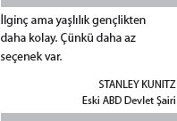
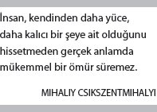

Demografinin kader olduğunu istatistikçilerden biliyoruz. Rolling Stones'tan da biliyoruz ki her istediğimizi elde edemeyiz. Bilmediğimiz, bu iki bileği bükülmez prensip kafa kafaya gelip bir masaya oturup da içki içmeye ve birbirlerini daha iyi tanımaya başladıklarında olacaklardır.
Ama birazdan bunu öğrenmiş olacağız.
Bebek patlaması kuşağının ilk üyeleri 2006'da altmış yaşına girmeye başladı. Sonunda büyük bir sıfır olan yaşlara girenler genellikle durup düşünür, ömürlerinin muhasebesini yapar. Gördüm ki Amerika'da ve başka ülkelerdeki bu kuşak mensupları bu kilometre taşına ulaştıklarında genellikle üç aşamalı bir tepki veriyorlar.
İlk aşamada şunu soruyorlar: "Ben nasıl oldu da altmışıma girdim?" Kilometre sayaçları altmışı gösterdiğinde insanlar çok zaman şaşkınlık ve tedirginlik yaşıyorlar. Altmış yaşın ihtiyar bir yaş olduğunu düşünüyorlar. Pişmanlıklarını sayımını yapıyor, Mick Jagger ve tayfasının haklı olduğu, hayatta her istediklerine sahip olamayacakları gerçeği ile yüzleşiyorlar.
Sonra ikinci aşama geliyor. Çok uzak olmayan bir geçmişte yaş altmış, iş bitmiş diye bilinirdi. Gelgelelim, yirmi birinci yüzyıldayız ve artık altmış yıl yaşayan biri, epey bir süre daha yaşayacak kadar sağlıklı sayılıyor. Birleşmiş Milletler verilerine göre altmış yaşındaki bir Amerikalı, yirmi yıldan uzun bir süre daha yaşayabilir. Aynı yaştaki bir Amerikalı kadın ise bir çeyrek asır daha buralarda olabilir. Japonya'da altmış yaşındaki bir erkeğin seksen ikinci yaş gününü, bir kadının da seksen sekizinci yaş gününü kutlama ihtimalleri yüksek. Durum birçok müreffeh ülkede de aynı. Fransa, İsrail, İtalya, İsviçre, Kanada ve başka varlıklı ülkelerde de altmış yaşını geçtiyseniz seksenlerinizi görme ihtimaliniz kuvvetli.[97] Bunu bilmek insanı rahatlatıyor. Osaka'daki veya Toronto'daki bebek patlaması kuşağı mensubu, "Yirmi-otuz yılım daha var" diyerek bir oh çekiyor.
Ama bu rahatlama uzun soluklu olmuyor. Çünkü o oh çekilir çekilmez insanlar üçüncü aşamaya giriyor. Bir yirmi beş yıl daha yaşayacaklarını idrak ettiklerinde yirmi beş yıl geriye bakıp otuz beşinci yaşlarını hatırlıyorlar. O anda kafalarına sert bir cisimle vurulmuş gibi hissediyorlar. "Vay be. Zaman ne kadar da çabuk geçti" diyorlar. "Acaba önümdeki yirmi beş yıl da böyle hızlı mı geçecek?" diye soruyorlar. "Eğer öyle geçecekse ben ne zaman önemli bir şeyler yapacağım? Hayatımın en güzel çağını ne zaman yaşayacağım? Bu dünya için ne zaman bir fark yaratacağım?"
Bir neslin mutfak masalarının etrafında yapılan sohbetlerde çokça sorulan bu sorular biraz dokunaklı gelebilir. Ama günümüz dünyasında bu sorular inanılmaz bir sıklıkla sorulmakta. Düşünsenize, birçok Batı ülkesinin yanı sıra Japonya, Avustralya ve Yeni Zelanda gibi ülkelerde bebek patlaması çağı mensupları, en büyük demografik kitleyi meydana getiriyor. Amerikan Nüfus Dairesi'ne göre sadece ABD'de yetmiş sekiz milyon kişi bu kuşağın mensubu. Yani her yıl yaklaşık dört milyon, bir başka deyişle her gün on bir binden ve her saat dört yüz elliden fazla Amerikalı, insanları derin derin düşündüren, geçmiş muhasebesi yapmaya sevk eden bu yaş gününü kutluyor.[98]
Daha farklı bir ifadeyle belirtmek gerekirse de sadece Amerika'da her on üç dakikada yüz Amerikalı, altmış yaşına giriyor.
Dünyanın gördüğü en varlıklı, en iyi tahsilli kuşağına mensup yüz kişi her on üç dakikada bir kendi faniliklerini hissetmeye ve hayatın anlamı, önemi ve gerçekte ne istediklerine dair sorular sormaya başlıyor.
Yüz kişi. Her on üç dakikada bir. Her saat. Her gün. 2024'e kadar.
Demografinin soğuk cephesi ile gerçekleşmemiş rüyaların sıcak cephesi çarpıştığında sonuç, dünyanın daha önce hiç şahitlik etmediği bir amaç fırtınası olabilir.
AMAÇ DÜRTÜSÜ
Tip I tripodunun ilk iki ayağı olan özerklik ve ustalık, olmazsa olmaz unsurlardır. Ama dengeyi bulabilmek için üçüncü bir bacağa, amaç unsuruna ihtiyacımız var. Ustalaşma çabasındaki özerk kişiler, çok yüksek performans düzeylerine ulaşırlar. Ama daha yüce bir hedef için bunu yapıyorlarsa, işte o takdirde daha da yüksek başarılara imza atarlar. En güçlü şekilde motive olan kişiler –en verimli ve mutlu olanları saymaya bile gerek yok– arzularını kendilerinden daha yüce bir gayeye yöneltirler.
Gelgelelim, Motivasyon 2.0, amacı bir motivasyon unsuru olarak tanımaz. Tip X işletim sistemi, bu kavramı tamamen görmezden gelmese de bunu bir süs statüsüne, isterseniz takabileceğiniz bir aksesuar konumuna oturtur. Böylece önemli şeylere ayak bağı olmaz. Ne var ki bu görüşü benimseyen Motivasyon 2.0, kim olduğumuza dair önemli bir noktayı gözden kaçırır. İnsanoğlunun gözünü göklere çevirdiği, evrendeki yeri üzerinde akıl yormaya, dünyayı güzelleştirecek, kendisinden sonra da varlığını sürdürecek bir şeyler yaratmaya çalıştığı ilk andan itibaren, hepimiz birer amaç arayıcısı haline geldik. Psikolog Mihaly Csikszentmihalyi, bir görüşmemizde şöyle demişti bana: "Amaç, yaşamak için gereken hareket enerjisini sağlar. Bence evrim, kendisinden sonra da var olacak bir şeyler yapma isteğine sahip insanları başarıyla seçiyor."
Motivasyon 3.0, insan doğasının bu yönünü benimsemeye çalışıyor. Yaşları ve kalabalık bir kitle olmaları sebebiyle bebek patlaması çağı mensupları, amaç kavramını kültürel merkezimize doğru itekliyorlar. Buna bağlı olarak iş dünyası da amacın kendisi için anlamını yeniden düşünüyor. Strateji gurusu (ve bebek patlaması kuşağı mensubu) Gary Hamel, "Duygusal bir katalizör olarak servet maksimizasyonu, insanların enerjisini tam anlamıyla harekete geçirecek güçten yoksun" diyor.[99] Önceki bölümde anlattığım, çalışanların işleriyle aralarındaki bağın gevşekliği durumunun bir de can dostu var ki şirketler bunu yeni yeni fark etmeye başladılar. Özellikle ABD'de gönüllülük, aynı güçle yükseliyor. Bu iki zıt trend, ücret karşılığı yapılan işe bağlılığın azalması ile ücretsiz yapılan işe dönük ilginin artması gösteriyor ki gönüllü çalışma, ücretli çalışmanın yapamadığı şekilde insanları besleyen bir unsur.

Para kazanma isteğinin çok güçlü olmakla birlikte bireyler için de kurumlar için de yetersiz bir dürtü olduğunu öğreniyoruz. Çoğunlukla görmezden geldiğimiz veya gerçekçi değil diye dikkate almadığımız daha güçlü bir enerji kaynağı var. Buna isterseniz "amaç dürtüsü" diyelim. İki işletim sistemi arasındaki son büyük fark işte bu dürtüdür. Motivasyon 2.0, kâr maksimizasyonuna odaklanır. Motivasyon 3.0, kâr elde etmeye sırtını dönmez ama amaç maksimizasyonuna da eşit ağırlık verir. Kurumsal hayatın üç boyutunda yani amaçlar, sözcükler ve politikalar bağlamında bu yeni amaç dürtüsünün ilk kıpırtılarını görmeye başlamış bulunuyoruz.
Hedefler
Hedefler korosunun şarkıcıları sadece bebek patlaması kuşağı mensupları değil. Onlarla birlikte aynı şarkıyı çocukları da seslendiriyor. Onlar, Y Kuşağı, Bin Yıllıkçılar Kuşağı veya "Echo Boomer" Kuşağı olarak adlandırılıyor. İşgücüne erken bir çağda katılmaya başlayan bu genç yetişkinler, şirketlerin ağırlık merkezini varlıklarıyla değiştiriyorlar. Yazar Sylvia Hewlett'in bir araştırmasında saptadığı gibi iki kuşak "başarıyı yeniden tanımlıyor ve radikal olarak 'remiks' yapılmış bir dizi ödülü kabul etmeye hazır". Her iki kuşak da parayı en önemli kazanç olarak görmüyor. Onlar için önemli olan, gayri maddi şeyler. Mesela "harika bir ekip olmak", "toplumdan aldığını çalışarak topluma geri ödemek" gibi.[100] Eğer bir şirkette bu ödül paketini bulamazlarsa kendi girişimlerini kuruyorlar.

Amerikalı Y Kuşağı mensubu Blake Mycoskie ve 2006'da kurduğu TOMS Shoes örneğini ele alalım. TOMS, geleneksel tanımlamalara kolayca uyan bir şirket değil. Topuksuz, kanvas, spor ayakkabılar satıyor. Ama TOMS'dan her ayakkabı alışınızda şirket, gelişmekte olan ülkelerden birindeki bir çocuğa da bir çift yeni ayakkabı veriyor. TOMS, ayakkabı satışlarıyla operasyonlarını finanse eden bir hayır kurumu mu? Yoksa iyilik yapmak için kârını feda eden bir şirket mi? Ne o, ne bu. İkisi birden. Cevap o denli kafa karıştırıcı ki şirket, web sitesinde bu duruma, büyük gelen ayakkabıları nasıl iade edeceğinizi açıkladığı bölümün altında açıklık getirmiş. Sitede şirketin "özünde dayanışma olan, kâr amacı güden bir kuruluş" olduğu belirtiliyor.
Anladınız mı? Hayır mı? Peki. Şunu deneyelim mi? Şirketin "iş modeli, müşterilerimizi hayırsevere dönüştürüyor". Şimdi daha iyi mi? Belki. Daha garip? Kesinlikle. TOMS gibi şirketler, mevcut kategorileri bulanıklaştırıyor, hatta yok ediyorlar. Hedefleri ve şirketlerin onlara ulaşmak için kullandıkları yol, Motivasyon 2.0 ile o kadar uyumsuz ki TOMS, bu yirminci yüzyıl işletim sistemine bel bağlamış olsaydı, bütün çabası, bir mavi ölüm ekranının iş alemindeki dengi içinde yok olup giderdi.
Oysa Motivasyon 3.0, büyük oranda amaç maksimizasyonu için geliştirildi. Esasen, amaç maksimize edicilerin yükselişi, yeni bir işletim sistemine ihtiyaç duymamızın da ilk nedeni. Birinci bölümde anlattığım gibi, TOMS ve benzeri işletmeler, insanların neyi nasıl organize ettiklerine dair yükselen yeni düşünce akımının öncüleri konumunda bulunuyorlar. "Kâr amacı güden" şirketler, B şirketleri ve düşük kârlı limitet şirketler, geleneksel şirket yapısının hedeflerini yeniden yazıyorlar. Yeni bir tür işadamı doğuyor. Nasıl ki geleneksel ekonomik teori, büyük bir coşku ile işletmelerin kâr elde etmesini savunuyorsa bu işadamları da aynı coşku ve hevesle bir amaç peşinde koşuyor. Kooperatifler –kâr maksimizasyonundan başka hedefleri olan eski bir tür iş modeli– bile çizgilerin bulanık olduğu kenardan net olduğu merkeze doğru ilerliyor. Yazar Marjorie Kelly'ye göre son otuz yılda dünya genelindeki kooperatiflerin üye sayısı iki kat artıp sekiz yüz milyona ulaşmış bulunuyor. Sadece ABD'de bir kooperatife mensup olanların sayısı hisse senedi borsasında hissesi olanların sayısından fazla. Fikir, gitgide yayılıyor. Kolombiya'da Kelly'nin yazdığına göre "SaludCorp, nüfusun dörtte birine sağlık hizmeti götürüyor. İspanya'da Mondragon Corporacion Cooperativa, ülkenin en büyük yedinci sanayi kuruluşu konumunda bulunuyor."[101]
"Sadece kâr amacı gütmeyen" bu kuruluşlar, son on beş yılda çok ses çıkarıp sözlerinde hemen hemen hiç durmayan "sosyal sorumluluk bilincine sahip" şirketlerin çok ilerisinde. Söz konusu Motivasyon 3.0 şirketlerinin amacı, etik ve yasalara saygılı faaliyet gösterip bir yandan da kâr elde etmek değil. Bir amacı gerçekleştirmeye ve kârlarını, bir hedef olarak değil de bir araç olarak kullanmaya çalışıyorlar.
Sözcükler
2009 baharında dünya ekonomisi, kırk yılda bir görülecek cinsten bir krizden çıkmaya ve onu yaratan çakallıklardan kendini kurtarmaya çalışırken, birkaç Harvard Business School öğrencisi aynaya bakıp sorunun kendileri olup olmadığını sorguluyordu. Örnek aldıkları kişilerin, finans uzmanlarının, şirket anlaşmacılarının aslında bir masalın kahramanları değil, korkunç bir hikayenin kötü adamları olduğunu gördüler. Bu kartviziti parlak insanların çoğunun, finansal sistemin uçurumun eşiğine gelmesinde payı vardı. Bu arada gençler, kendi sınıf arkadaşları arasında da bir araştırma yaptılar ve benzer davranışların tohumlarını buldular. Birkaç sene önce MBA öğrencileri arasında yapılan bir ankette öğrencilerin yüzde elli altı gibi yüksek bir oranı düzenli olarak kopya çektiklerini belirtmişti.[102]
Bir zamanlar bir onur sayılan MBA'li olmanın şimdi utanılacak bir hale düşmesinden endişe duyan ikinci sınıftaki bir grup Harvardlı genç, işletmede kendilerine öğretileni uygulayıp bir plan yaptılar. Birlikte "MBA Andı" adını verdikleri bir metin kaleme aldılar. İşletme mezunları bu Hipokrat yemini tarzındaki metni okuyarak daha yüce amaçlar için çalışmaya söz vereceklerdi. Yasal bir belge değildi. Bir davranış kuralı metniydi. Tavsiye ettiği davranış ve kullandığı sözcükler, kâr maksimizasyonundan çok amaç maksimizasyonuna meylediyordu.
Daha ilk cümleden itibaren ant, Motivasyon 3.0'ın ses tonuyla konuşmaya başlıyor:
"Bir yönetici olarak amacım, insanları ve kaynakları bir araya getirerek tek bir bireyin kendi başına yaratamayacağı bir değer yaratarak toplum refahına katkıda bulunmaktır." Ant, bu şekilde yaklaşık beş yüz sözcük boyunca devam ediyor: "Paydaşlarımın, iş arkadaşlarımın, müşterilerimin ve mensubu olduğumuz toplumun çıkarlarını gözeteceğim. Dünya genelinde sürdürülebilir bir ekonomik, toplumsal ve çevreci refahı yaratmak için çalışacağım."
"Amaç", "toplum refahı", "sürdürülebilir" gibi sözcükler Tip X sözlüğünden gelmiyor. İşletme fakültesinde insan bunları zor duyar. Zaten bir işletme fakültesinde bunlara yer verilmesi de beklenmez. Ancak dünyanın en güçlü MBA fabrikasındaki öğrenciler bunun tersini düşünmüşler. Ve sadece birkaç hafta içinde kabaca son sınıf öğrencilerinin dörtte biri bu andı içip altına imzalarını atmış. Bu girişimi başlatanlardan Max Anderson şöyle diyor: "Umudum o ki yirmi beş yıl sonra mezunlar partisinde bir araya geldiğimizde, kazandığımız paranın çokluğuyla veya okula ne kadar para verdiğimizle değil, yöneticiliğimizle dünyamızı nasıl güzelleştirmiş olduğumuzla anılmak istiyoruz."[103]
Sözcükler önemlidir. Dikkatlice dinlerseniz, azıcık farklı –azıcık daha amaç odaklı– bir diyalekt duymaya başlayabilirsiniz. Biraz önce bahsettiğim Gary Hamel diyor ki: "Yönetimin amaçları genellikle 'verimlilik', 'avantaj', 'değer', 'üstünlük', 'odaklanma', 'farklılaşma' gibi sözcüklerle ifade edilir. Bu hedefler önemli olsa da insanların kalbini kazanmakta yetersiz kalmaktadır. Şirket yöneticileri, sıradan iş faaliyetlerini, onur, hakikat, sevgi, adalet ve güzellik gibi daha derin, insanın ruhuna işleyen idealler ile birleştirmenin yollarını bulmalıdır."[104] İnsanların söylediklerine kulak verin ki onlar da size kulak versin.
Eski ABD çalışma bakanlarından Robert B. Reich'ın bir şirketin sağlığını belirlemede uyguladığı basit ve efektif yöntemin arkasındaki düşünce de işte bu. Reich, buna "zamir testi" adını vermiş. Bir işyerini ziyarete gittiğinde çalışanlara şirketle ilgili bazı sorular yöneltiyor. Cevaplarını dikkatle dinliyor. Ama daha çok, kullandıkları zamire odaklanıyor. Çalışanlar şirketten bahsederken "onlar" mı diyor yoksa "biz" mi? "Onlar" şirketleriyle "biz" şirketleri, Reich'a göre çok farklı.[105] Ve Motivasyon 3.0'da kazanan hep "biz" oluyor.
Politikalar
Şirketlerin kullandıkları sözcüklerle peşinde oldukları hedefler arasında sözcükleri hedeflere dönüştürmekte kullandıkları politikalar yer alır. Burada da insan, farklı bir yaklaşımın öncü sarsıntılarını rahatlıkla hissedebilir. Mesela, son on yılda birçok şirket, kurumsal etik yönetmelikleri için ciddi bir zaman ve çaba harcadı. Yine de gayri ahlaki davranışların azaldığını görmek pek mümkün değil. Bu yönetmelikler değerli olmasına değerli, ama bir politika olarak istem dışı bir şekilde amaç odaklı davranış kalıbını Tip I sisteminden Tip X sistemine taşıyabiliyorlar. Harvard Business School hocalarından Max Bazerman bunu şöyle açıklıyor:
Diyelim ki iyi davranışlar sergilemek üzere motive olmuş bir grup insanı aldınız ve onlara daha sonra uymaları gereken düşük standartlarda bir ahlak kuralları yönetmeliği verdiniz. Şimdi, "yapılması gereken ve doğru olan bu" demek yerine, alternatif bir standart sundunuz. Böylece bütün bu kutuları işaretleyebilirsiniz.
Bir şirket düşünün. Olumlu ayrımcılığa inanan, çeşitlilik temeline oturtulmuş bir işgücü yaratarak dünyayı daha güzel bir yer yapabileceğine inanan bir şirket olsun. Ahlak kurallarını bir kontrol listesi boyutuna indirgediğinde birden bire olumlu ayrımcılık yönü, şirketin fırsat eşitliğine inandığını göstermek için uyması gereken bir koşullar destesine dönüyor.
Artık şirket, çeşitliliğin devamına değil, yaptığı her şeyin doğru olduğunu göstermek için bütün kutucukların işaretlenmesine odaklı. Böylece dava edilemeyecek tabii. Daha önce çalışanlarının doğru olanı yapmak konusunda içsel bir motivasyonları vardı. Ama artık şirketlerinin ceza almamasını, dava edilmemesini sağlamaya dair harici bir motivasyonları var.[106]
Bir başka ifadeyle, insanlar cezadan kaçınmak için asgari etik koşulları yerine getirebilir. Ama yönetmeliklerin, kurumsal damarların içine amaç olgusunu şırınga etmek anlamında hiçbir gücü yoktur. Bu noktada, amaç maksimizasyonunu sağlamak için takınılabilecek daha iyi bir yaklaşım var. O da özerkliğin gücüne başvurmak. Çok çarpıcı iki örnek, konuya açıklık getirecek.
İlki şu: Birçok psikolog ve ekonomist, para ile mutluluk arasındaki bağın zayıf olduğunu saptadı. Yani belli ve gayet mütevazı bir seviyeden sonra, daha büyük miktarda para sahibi olmak, insanları daha yüksek bir tatmin düzeyine ulaştırmıyor. Ama birkaç sosyolog, bu gözleme küçük bazı ayrıntılar eklemeye başladı. British Columbia Üniversitesi sosyologları Lara Aknin ve Elizabeth Dunn ile Harvard Business School'dan psikolog Michael Norton'a göre insanların parayı nasıl harcadıkları, en azından ne kadar kazandıklarına eşit oranda önemlidir. Daha açık bir dille ifade etmek gerekirse, parayı başkaları için harcamak, mesela kendiniz için bir MP3çalar değil de eşinize çiçek almak veya bir gaye için, mesela pahalı bir saç kesimine harcamak yerine dini bir kuruluşa bağışlamak, öznel esenliğimizi gerçekten de güçlendirebilir.[107] Dunn ve Norton, "toplum destekçisi" harcama olarak adlandırdıkları saptamalarını kurumsal politikalara dönüştürmeyi öneriyor. Boston Globe'a göre, iki bilim adamı, "şirketlerin bütçelerinden hayır işleri için pay ayırabileceğine, çalışanlara bağışlamaları için para verebileceğine, böylece istedikleri derneğe bağış yapan işçilerin mutluluklarının artacağına, duygusal esenlik durumlarının daha iyi düzeye geleceğine" inanıyor.[108] Başka bir deyişle, şirketin topluma borcunu ödeme yönteminde kontrolü çalışanlara vermek, onları, şartlı verilen maddi bir teşvikten daha çok mutlu edebilir.
Diğer bir araştırma da amaç merkezli politika tavsiyelerine bir ikincisini ekliyor. Mayo Clinic gibi ileri gelen sağlık kurumlarında vazifeli doktorlar, sonunda güçlerini tüketecek kadar ağır baskı ve taleplerle karşılaşıyorlar. Ama bu prestijli tıp kurumunda yürütülen bir saha araştırması gösterdi ki, doktorlara istedikleri gibi kullanabilecekleri, kendilerine göre mesleklerinin en anlamlı olduğunu düşündükleri alanında değerlendirebilecekleri –bu hasta bakımı da olabilir, araştırma veya kamu hizmeti de olabilir– haftada bir gün vermek, işlerindeki fiziksel ve duygusal yorgunluğu azaltabilirdi. Doktorlardan bu deneye katılanlar arasında güçleri tükenenlerin oranı, deneye katılmayanların yarısında kaldı.[109] Bunu, bir amacı olan "yüzde yirmilik zaman" dilimi olarak düşünebiliriz.
İYİ BİR HAYAT
Rochester Üniversitesi'nden her sene yaklaşık bin üç yüz öğrenci mezun oluyor ve ebeveynleriyle hocalarının gerçek dünya diye isimlendirmeyi pek sevdikleri bir yolculuğa adım atıyor. 2008'de Edward Deci, Richard Ryan ve meslektaşları Christopher Miemiec, yakın bir tarihte mezun olacak öğrencilere hayattaki hedeflerini sormaya ve kariyerlerinin ilk dönemlerinde neler yaptıklarını takip etmeye karar verdi. Gönüllü öğrencilerle birçok sosyoloji araştırması yapılmış olsa da bilim adamları, öğrencileri mezuniyetten ve üniversitelerinin kapısından çıktıktan sonra pek takip etmezler. Bahsettiğim araştırmacılar, "insanların yetişkin kimliklerine ve hayatlarına geçişi ifade eden kritik bir gelişim dönemi" olduğu için öğrencilerin okul sonrası yaptıklarını incelemek istediler.[110]
Öğrencilerden bir kısmı zengin veya ünlü olmak gibisinden, Deci, Ryan ve Niemiec'in "harici hevesler" olarak adlandırdığı, bizlerin ise "kâr hedefi" diyebileceğimiz hedeflere sahipti. Diğerleri, başkalarının hayatına katkıda bulunmak, öğrenmek, adam olmak gibi bizlerin "amaç hedefleri" olarak adlandırabileceğimiz "içsel heveslere" sahipti. Öğrenciler, gerçek dünyaya adım attıktan bir-iki yıl sonra araştırmacılar, onları ne yaptıklarını öğrenmek için kolları sıvadı.
Amaç hedefleri olan ve onlara ulaştıklarına inananların memnuniyet ve öznel esenlik durumu okuldakinden daha iyiydi. Bunalım ve gerilim düzeyleri ise daha düşüktü. Bu herhalde kimseyi şaşırtmamıştır. Kişisel ve anlamlı bir hedef belirleyip ona ulaştıklarını düşünüyorlardı çünkü. Böyle bir durumda birçoğumuz da kendini gayet iyi hissederdi muhtemelen.
Öte yandan, kâr hedefleri olan kişilerin sonuçları daha komplike idi. Hedeflerine ulaştıklarını söyleyenler, yani paraya ve üne kavuşanlar, öğrencilik günlerindekiyle aynı memnuniyet ve özsaygı düzeyinde bulunduklarını ifade ettiler. Yani hedeflerine ulaşmışlar ama daha mutlu olamamışlardı. Dahası, hedeflerini tutturmuşlarsa da kâr hedefleri olan mezunlarda gerginlik ve bunalımları artmış, diğer negatif indikatörleri de kötüleşme kaydetmişti.
Araştırmacılar, raporlarında şöyle yazıyordu: "Bu bulgular, belli bir hedefler bütününün (bu durumda bunlar kâr hedefleridir) başarılmasının olumlu değil de olumsuz bir etki yapması dolayısıyla hayli çarpıcıdır."[111]
Bu sonuçları Deci ve Ryan ile değerlendirdiğimde onları çok önemli bulduklarını gördüm. Çünkü yaptıkları tespite göre, istediğimizi elde ettiğimizde bile bu her zaman için bizim gerçekten ihtiyaç duyduğumuz şey olmuyordu. Ryan, servet sahibi olmak için yüksekten uçan harici hedefler güden kişilerin o servete ulaşma ihtimallerinin daha yüksek olduğunu ama yine de mutluluğu bulamadıklarını söyledi.
Deci de aynı durumu şöyle izah etti: "Öteden beri şöyle inanılır: Bir şeye değer verirsin. Onu elde edersin. Bunun sonuncunda kendini daha iyi hissedersin. Ama biz burada gördük ki değer verdiğiniz ve elde ettiğiniz bazı şeyler, sonuçta sizi daha iyi değil daha kötü yapabiliyor."
Bu muammayı –mutluluğun sadece hedeflere sahip olmakla değil, doğru hedeflere sahip olmakla elde edilebileceğini– anlayamamak, makul insanları yıkıma sürükleyebilir. İnsanlar kâr hedefleri peşinden gider ve o hedeflere ulaşır ama hayatlarında bir güzelleşme hissetmezlerse, o durumda verecekleri tepkilerden biri, hedeflerin büyüklüğünü ve çapını artırmak, yani daha fazla para ve tanınmışlık elde etmeye çalışmak olacaktır. Ryan, bu durumdaki kişilerle ilgili olarak "Mutluluğa giden yolda ilerlediklerini düşünerek daha derin bir mutsuzluğun içinde bulabilirler kendilerini" diyor.

Ryan, ekliyor: "Bu gruba girenlerde görülen gerginlik ve bunalımın nedenlerinden biri, çevreleriyle iyi ilişkiler kuramamaları. Para kazanmakla, kendileriyle uğraşmakla çok meşguller. Hayatlarında sevgiye, ilgiye, şefkate, empatiye ve bu tür gerçekten önemli olan şeylere daha az yer var."
İki uzmanın elde ettikleri veriler, bireyler için geçerliyse neden bireylerden meydana gelen şirketler için de geçerli olmasın? Ben, kâr önemsizdir demiyorum. Elbette önemlidir. Kâr elde etme güdüsü, başarıların arkasındaki ateşleyici güç oldu her zaman. Ama tek güdü değildi. En önemlisi de değil. Matbaadan anayasal demokrasiye, amansız hastalıkların çaresine kadar tarihin en büyük başarılarına baktığımızda mucitlerin gece yarılarına kadar çalışmasını sağlayan kıvılcımın, sadece bir kazanç elde etme isteği değil, aynı zamanda yüce bir amaca hizmet etme arzusu olduğunu görüyoruz. Sağlıklı bir toplum ve sağlıklı kurumsal yapılar, bir amaçla başlar ve kazancı, o amaca veya o amacın elde edilmesiyle ortaya çıkacak, güzel bir yan ürüne ulaşmanın aracı olarak görür.
İşte burada belki, hani bir ihtimal bebek patlaması kuşağının temsilcileri ipleri eline alabilir. Özerklik ve ustalık konularında yetişkinler, çocukları kendilerine örnek almalılar. Ama belki amaç, başka türlü bir şeydir. Büyük resim üzerinde düşünebilmek, kendi faniliğimiz üzerinde kafa yormak, bazı hedefleri başarmanın aradığımız cevap olmadığını anlamak, gezegende bir süre ömür sürmüş olmayı gerektirir. Gezegenin tarihinde ilk defa olarak altmış beş yaşın üstündekilerin sayısı, beş yaşın altındakileri kısa bir süre sonra geçmiş olacak. Bu nedenle zamanlama bundan daha iyi olamaz.
Bir amaç peşinde gitmek doğamızda var. Ama o doğa, şimdi, demografik açıdan hiç beklenmedik ve yakın zamana kadar tahayyül dahi edilememiş bir ölçekte kendini gösteriyor ve ifade ediyor. Sonuçlar, şirketlerimize hayat öpücüğü verebilir ve dünyamızı yeniden şekillendirebilir.
Bu kitabın ANA FİKRİ, bilimin bildiği ile iş dünyasının yaptığı arasındaki farkı göstermekti. Fark, uçurumlar kadar büyük. Varlığı tedirginlik verici. Bu farkı kapatmak çok zor gibi görünse de iyimser olmak için sebeplerimiz var.
İnsan motivasyonu konusunu araştıran bilim adamları ki çoğunu bu kitapta tanıdınız, bize bizimle, performansımız ve ruh halimizle ilgili çok daha net ve kesin bilgiler veriyor. Gösterdikleri hakikatler basit ama çok önemli. Bilim, bu tipik yirminci yüzyıl ödül-ceza motivasyon sisteminin –her nasılsa insanların "doğal" bir parçası olduğunu düşündüğümüz şeylerin– bazen işe yaradığını gösteriyor. Fakat çok dar bir aralıkta etkililer. Motivasyon 2.0 işletim sisteminin ana bileşenleri olan şartlı ödüllerin birçok durumda etkisiz olduğunu gösteren bilim, ekonomik ve toplumsal ilerlemenin bugün ve gelecekte kaydedeceği yol için gerekli üst düzey, yaratıcı, kavramsal yetenekleri de öldürebileceğini kanıtlamış bulunuyor. Bilim, yüksek performansın sırrının biyolojik güdülerimiz veya ödül-ceza güdümüz değil, üçüncü güdümüz, yani özümüzde bulunan kendi hayatımızı yönetme, becerilerimizi artırma ve geliştirme ve bir amacı olan bir hayat sürme arzumuz olduğunu gösteriyor.
Şirketlerimizi bu hakikatlerle aynı paralele getirmek çok kolay olmayacak. Eski fikirleri aklımızdan silmek zor, eski alışkanlıkları kırmak çok daha zordur. Bilim, içten içe bildiklerimizi doğrulamasaydı bu uçurumun kapanması konusunda daha umutsuz olabilirdim.
O günkü havucun arkasından koştuktan sonra insanoğlunun sadece daha küçük, daha yavaş, burnu daha iyi koku alan atlar olmadığını biliyoruz. Eğer çocuklarla zaman geçiriyorsanız veya en azından kendi çocukluğunuzu hatırlıyorsanız, pasif ve itaatkar canlılar olarak yaratılmadığınızı siz de kabul edersiniz. Aktif ve girişken olmak üzere yaratıldık. Hayatımızın en zengin deneyimlerinin, başkalarının bizi onaylamasını beklerken değil, kendi sesimizi dinlerken, önemli bir şeyi iyi bir şekilde ve kendimizden daha büyük bir gaye uğruna yaparken yaşadık, yaşıyoruz.
Aradaki uçurumu kapatmak ve motivasyon ile ilgili anlayışımızı yirmi birinci yüzyıla taşımak, iş dünyası için gerekli bir hareket olmanın çok ötesinde bir öneme sahip. Bu insanlığımızın tasdikidir.